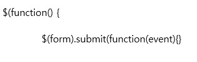

Time to explore get thumbnail API now. You must have been familiar with using Microsoft Computer Vision API quite a lot now.
The official document about this API can be found here.
Link to Get Thumbnail API official documentationAccording to the official document, this API makes an thumbnail in a size the user wants. When user input width, and height the user desire the picture to be then this API makes that specific-sized thumbnail as a result. The point of Microsoft Computer Vision get thumbnail API is it crops the picture based on ROI(Region Of Interest). So it crops the important part of the picture with intelligence in any size.
Console Usage
There is a console also you can test Microsoft Computer Vision API which is called OPEN API testing console.
Link is here
Link to Get Thumbnail API ConsoleYou can input some values including your API key, width, height, and the picture URL. And the request URL and HTTP request will be like below. And it seems it worked well.
You must have this result. It did work well. Good request and Good respond, but why can not see a thumbnail we want? The official document says it returns [Binary image data]. Dealing with Binary image data to display on the web browser needs extra work. Binary image data should be encoded to base64 style, which means we have to encode the file but this is a subject beyond what we learnt from CS290 so we can skip this now and deal with how to encode binary image data to base64 and eventually display that base64 encoded image on the browser later. Now, we can check whether our request and response work well.
Focus on Request URL header again, you can see what kind of information is being carried. As you can see from HTTP request. This request is done via POST way. We input URL and size of thumbnail to be so using POST will be more proper.
Actual code to get a new thumbnail
You can input URL, width, and height as you did into console before. Let's see the code.
This part is same with Analyze Image API. because there is a form we can type in width, height, and URL. so jQuery waits till the form is loaded and we click the submit button.
Now the parameters got different as you can notice. We put URL, width, and height as a parameter to be carried on URL. We use AJAX here. as AJAX works the program works asynchronously, so the user does not have to wait till the response to come to do other action.(Program works asynchronously.)
We set header using setRequestHeader() function. Content Type and API key should be in the header so we set those data to the request header here. And type is "POST". To send the data we make the data into string.